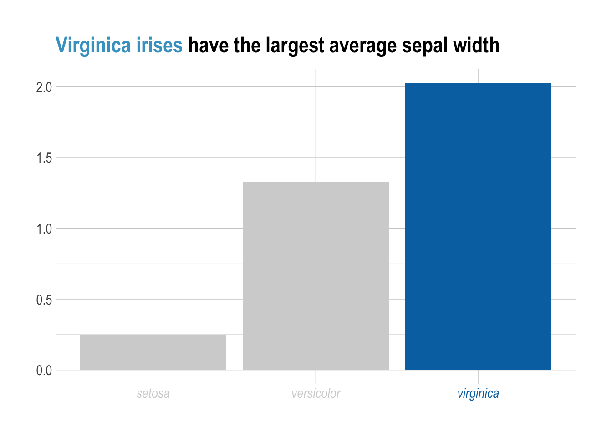
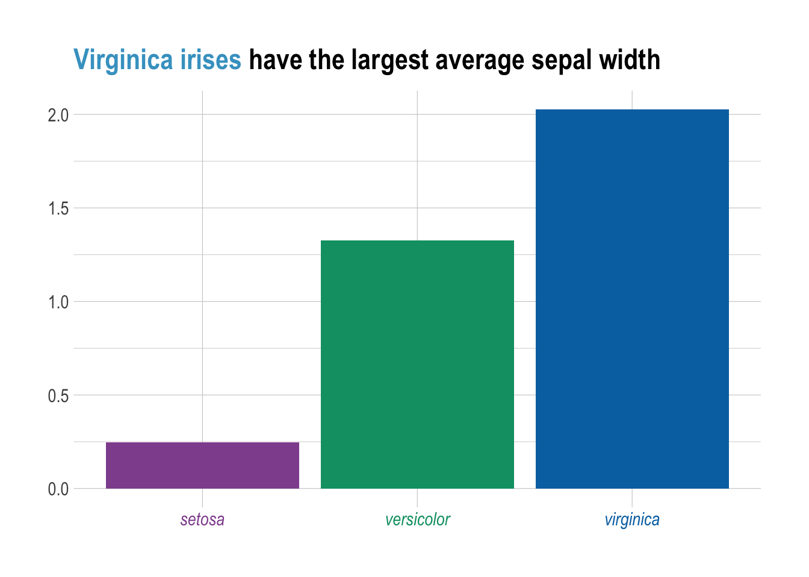

library(tidyverse)
library(ggtext)
library(grid)
library(glue)Colouring Text in ggplot2
R
ggplot
How to colour text in ggplot.
One of the more underrated options in data viz is to colour text. You can use this to highlight important information, or to improve how the viz looks. It is quite simple with ggtext, so I will not go into too much detail.
I originally wrote this post at 10pm before bed, so I used mtcars to allow myself to get this done quickly. To have the colour applied to the text, you need to specify element_markdown() in the theme() function.
mtcars |>
ggplot(aes(
x = wt,
y = mpg,
colour = factor(cyl)
)) +
geom_point() +
scale_colour_brewer(palette = "Set2") +
labs(
x = "<span style = 'color:#93C1DE'>**wt**</span>",
y = "<span style = 'color:#2ca25f'>**mpg**</span>",
title = "Lower <span style='color:#93C1DE'>**wt**</span> tends to increase the amount of <span style='color:#2ca25f'>**mpg**</span>",
colour = ""
) +
theme(
plot.title = element_markdown(),
axis.title.x = element_markdown(),
axis.title.y = element_markdown()
)
Like I mentioned earlier, you can highlight a particular feature of interest by colouring a particular column or data point, then matching that colour in the title. To only have one of the columns coloured, you need to do a little bit more work, but it is still quite simple.
iris |>
group_by(Species) |>
summarise(mean_petal_width = mean(Petal.Width), .groups = "drop") |>
mutate(
colour = c("lightgray", "lightgray", "#0072B2"),
name = glue("<i style='color:{colour}'>{Species}</i>"),
name = fct_reorder(name, mean_petal_width)
) |>
ggplot(aes(
x = name,
y = mean_petal_width,
fill = colour
)) +
geom_col() +
hrbrthemes::theme_ipsum() +
scale_fill_identity() +
labs(
x = NULL,
y = NULL,
title = "<span style = 'color: #43a2ca;'>Virginica irises</span> have the largest average sepal width"
) +
theme(
plot.title = element_markdown(),
axis.text.x = element_markdown(),
legend.position = "none"
)
Lastly, to have all the columns coloured, you essentially do the same thing. You just need to make sure that the colour column is a factor, and that the name column is ordered.
iris |>
group_by(Species) |>
summarise(mean_petal_width = mean(Petal.Width), .groups = "drop") |>
mutate(
colour = c("#91529e", "#009E73", "#0072B2"), #009E73
name = glue("<i style='color:{colour}'>{Species}</i>"),
name = fct_reorder(name, mean_petal_width)
) |>
ggplot(aes(
x = name,
y = mean_petal_width,
fill = colour
)) +
geom_col() +
hrbrthemes::theme_ipsum() +
scale_fill_identity() +
labs(
x = NULL,
y = NULL,
title = "<span style = 'color: #43a2ca;'>Virginica irises</span> have the largest average sepal width"
) +
theme(
plot.title = element_markdown(),
axis.text.x = element_markdown(),
legend.position = "none"
)
Session Info
sessionInfo()R version 4.1.2 (2021-11-01)
Platform: x86_64-apple-darwin17.0 (64-bit)
Running under: macOS Big Sur 10.16
Matrix products: default
BLAS: /Library/Frameworks/R.framework/Versions/4.1/Resources/lib/libRblas.0.dylib
LAPACK: /Library/Frameworks/R.framework/Versions/4.1/Resources/lib/libRlapack.dylib
locale:
[1] en_US.UTF-8/en_US.UTF-8/en_US.UTF-8/C/en_US.UTF-8/en_US.UTF-8
attached base packages:
[1] grid stats graphics grDevices utils datasets methods
[8] base
other attached packages:
[1] glue_1.6.2 ggtext_0.1.2 lubridate_1.9.2 forcats_0.5.1
[5] stringr_1.5.0 dplyr_1.1.1 purrr_1.0.1 readr_2.1.4
[9] tidyr_1.3.0 tibble_3.2.1 ggplot2_3.4.1 tidyverse_2.0.0
loaded via a namespace (and not attached):
[1] Rcpp_1.0.10 digest_0.6.31 utf8_1.2.3
[4] mime_0.12 R6_2.5.1 evaluate_0.20
[7] pillar_1.9.0 gdtools_0.3.2 rlang_1.1.0
[10] hrbrthemes_0.8.6 curl_5.0.0 rstudioapi_0.14
[13] extrafontdb_1.0 rmarkdown_2.20 labeling_0.4.2
[16] extrafont_0.19 htmlwidgets_1.6.2 munsell_0.5.0
[19] gridtext_0.1.5 shiny_1.7.4 httpuv_1.6.9
[22] compiler_4.1.2 xfun_0.37 systemfonts_1.0.4
[25] pkgconfig_2.0.3 gfonts_0.2.0 htmltools_0.5.5
[28] tidyselect_1.2.0 fontBitstreamVera_0.1.1 httpcode_0.3.0
[31] fansi_1.0.4 later_1.3.0 crayon_1.5.2
[34] tzdb_0.3.0 withr_2.5.0 commonmark_1.9.0
[37] crul_1.3 xtable_1.8-4 jsonlite_1.8.4
[40] Rttf2pt1_1.3.12 gtable_0.3.3 lifecycle_1.0.3
[43] magrittr_2.0.3 scales_1.2.1 cachem_1.0.7
[46] cli_3.6.1 stringi_1.7.12 farver_2.1.1
[49] promises_1.2.0.1 xml2_1.3.3 ellipsis_0.3.2
[52] generics_0.1.3 vctrs_0.6.1 RColorBrewer_1.1-3
[55] tools_4.1.2 markdown_1.5 fontquiver_0.2.1
[58] hms_1.1.3 fastmap_1.1.1 yaml_2.3.7
[61] timechange_0.2.0 colorspace_2.1-0 fontLiberation_0.1.0
[64] memoise_2.0.1 knitr_1.42